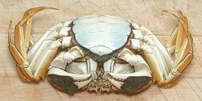

Mitten crabs are native to East Asia, from Korea south to Fujian, China. They are considered a serious invasive in North American and Europe. In California, there was an explosion of these crabs in 1998, but they soon imploded and are rarely seen in 2019. They have also invaded northeastern United States and the Great Lakes region, but have failed to establish populations there. They have established populations in several European locations. The Chinese have been over-harvesting these crabs, and are now considering importing unwanted European crabs to replenish stocks.
Mitten Crabs live in fresh water, but when mature, must travel downstream in the Autumn to breed in brackish water. The females overwinter in deep saltwater, returning to brackish water in the spring, where the the larva hatch from the eggs and start moving upstream to fresh water. Mature crabs spawn once and die of exhaustion. They can grow to 3.9 inches across the carapace, but the photo specimen was 2.7 inches and weighed 4-3/4 ounces.
More on Crabs.
 The photo to the left is the bottom side of the crab in the top photo. The very wide "apron" shows it is female, males have a very narrow apron. These crabs are considered a delicacy in China, harvested in the Autumn. The most expensive are caught migrating from Yangcheng Lake to the Yangtze River for spawning. Females are highly favored for the egg mass they contain. The box in which the photo specimen was packed was labeled "Female" on all sides.